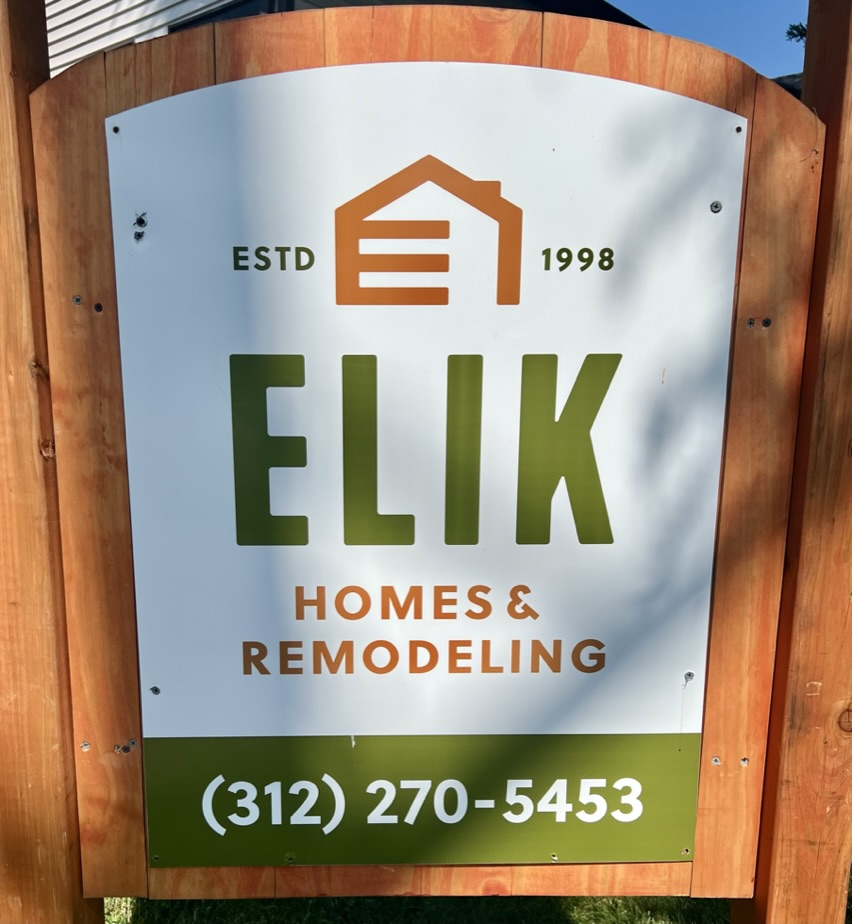

|  William Kapral, the owner of Elik Homes and Remodeling, has been sued nearly 20 times in Cook County by other businesses and individuals. A list of these lawsuits is publicly available at: https://casesearch.cookcountyclerkofcourt.org/ The names of individuals have been redacted to protect their privacy. Elik operates primarily out of La Grange, La Grange Park, Oak Park and Riverside, IL. Other operating names of the company may include: Elik Construction, Golden K Construction, and K Empire Construction. Please be informed about the history of companies you are entrusting to work in your homes and communities. |
|
|